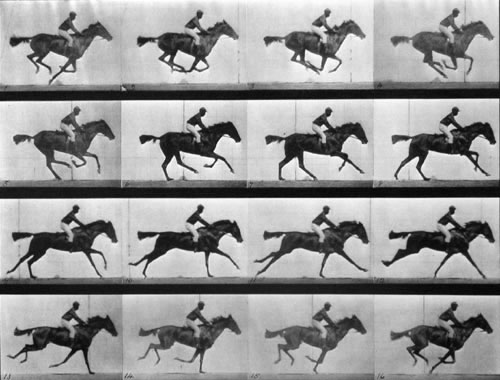

El cine, mejor conocido como la cinematografía, es una técnica y un arte que consiste en la captura, montaje y proyección de fotogramas de manera rápida y sucesiva. El resultado es la ilusión de una imagen en movimiento.
El cine emplea la tecnología fotográfica para crear la sensación del movimiento. Las grabaciones de audio que suelen acompañar estas imágenes ayudan a construir una experiencia estética o informativa audiovisual. Además de la ficción, puede emplearse también para la filmación de documentales o incluso para el periodismo audiovisual.
Dada su capacidad de narrar historias empleando ilusiones y efectos especiales, el cine es considerado una de las bellas artes: el séptimo arte. Por otro lado, a veces se lo considera como un punto de encuentro de las artes: la fotografía (cámara), la escritura literaria (guion), la música, etc.
En la realización de las obras cinematográficas interviene un grupo importante de personas, encargadas de diferentes tareas como:
Dirección
Producción
Guionaje
Edición
Manejo de cámara
Grabación de sonido y muchos más.
Por eso, el cine ha devenido hoy en día un asunto masivo. Aunque existen proyectos que se llevan a cabo con fondos limitados, habitualmente cada uno requiere grandes inversiones por parte de los centros cinematográficos como Hollywood en EEUU o Bollywood en India.
En 1872, una polémica enfrentaba a los aficionados a los caballos de California. Leland Stanford, exgobernador del Estado y poderoso presidente de la Central Pacific Railway, y un grupo de amigos suyos sostenían que había un instante, durante el trote largo o el galope, en que el caballo no apoyaba ningún casco en el suelo. Otro grupo, del que formaba parte James Keene, presidente de la Bolsa de Valores de San Francisco, afirmaba lo contrario.
Eadweard Muybridge dio por terminada esa polémica con esta secuencia de imágenes que Mostraban a « El caballo en movimiento »(img 1) uno de los predecesores de la captura de movimiento.

(img 1)
Caballo en movimiento (Animal locomotriz)
(Fue una serie animada de un caballo de carreras galopando. Las fotos fueron realizadas por Eadweard Muybridge y se publicaron por primera vez en 1887 en Filadelfia)